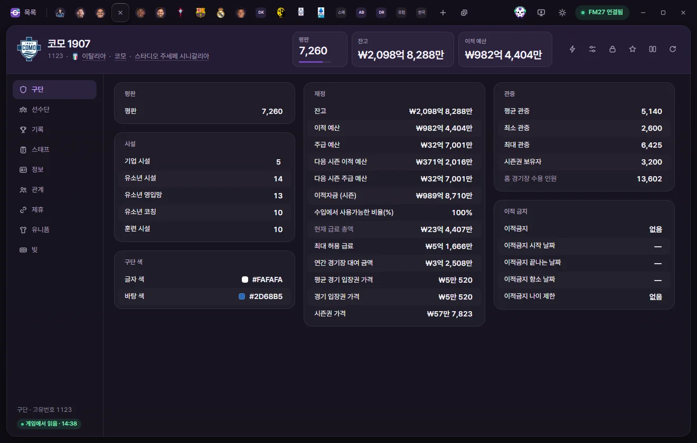
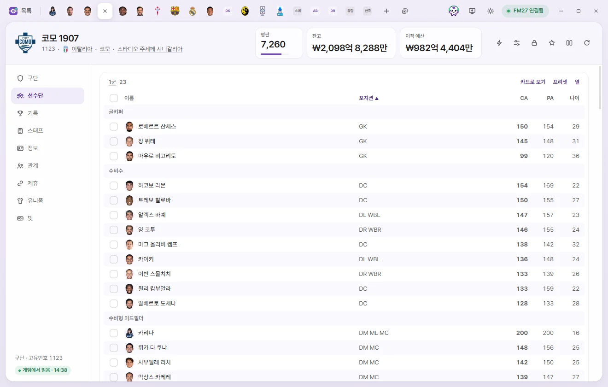
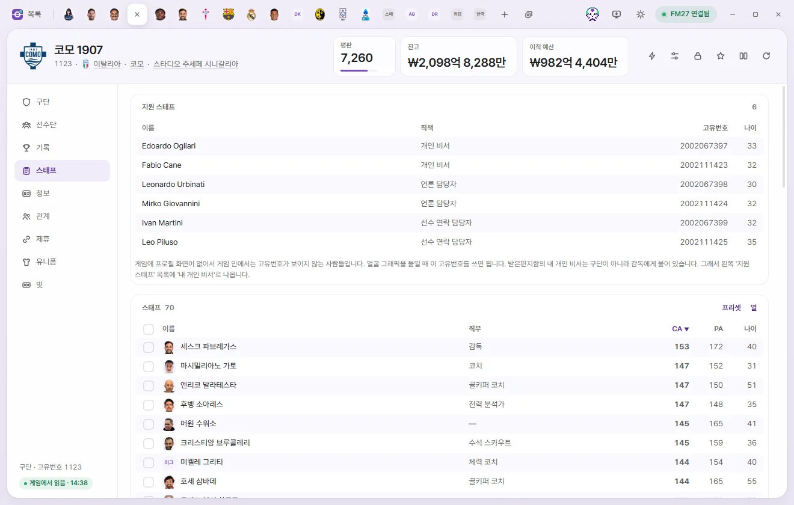

Edit tabs
Club
Edit a club's reputation, facilities, finances, transfer embargoes, attendance and colours, view its squad, staff and club records, and edit affiliations, kits and debt.


Opening a club tab
Click a club's name in the club list. You can also click any underlined club name elsewhere—such as Club on a player or staff tab—to open it. Editing values and saving work the same way as on the Player tab. Editing values on the Player page
Tab header
- The club badge shows the logo from your graphics pack if one is installed, or initials styled in the club's colours (Background colour and Text colour) otherwise.
- Below the name you'll see Unique ID, Nation, City and Home stadium. Click one to open its tab.
- The number cards show Reputation (0–10,000), Balance and Transfer budget. Click a card to type a new number directly. Monetary amounts are shown in the currency chosen in Settings.
- The buttons on the right are ⚡ In-game editor actions, Presets, Locks, Favourite, Compare and Reload from game. A club's ⚡ menu includes turning Use licensed kits on or off, Remove board objective and Remove supporter objective. Game editor (⚡)
There are nine sub-pages: Club, Squad, Records, Staff, Info, Relationships, Affiliations, Kits and Debt.
Club
Monetary ranges are based on British pounds (GBP), which is how the game stores them internally. On screen, amounts are displayed and entered in the currency chosen in Settings.
Reputation and facilities
| Field | What it does | Editable range |
|---|---|---|
| Reputation | Club reputation | 0–10,000 |
| Training facilities | 1–20 | |
| Youth facilities, Junior coaching, Youth recruitment | Shows 'None' for clubs without a value | 1–20 |
| Corporate facilities | 1–20 |
Finances
| Field | What it does | Editable range |
|---|---|---|
| Balance | Money the club currently holds | −1 billion to 2 billion |
| Transfer budget | Remaining transfer funds right now | 0 to 2 billion |
| Weekly wage budget | Shown as monthly or Annual wage budget depending on Settings | 0 to 2 billion |
| Next season transfer budget, Next season weekly wage budget | 0 to 2 billion | |
| Transfer budget (season) | Transfer funds allocated at the start of the season | 0 to 2 billion |
| Transfer revenue available (%) | Percentage of player sale revenue made available for transfers | 0–100% |
| Current wage total | Read-only | |
| Maximum wage allowed | Highest weekly wage the club can offer a single person | 0 to 100 million |
| Annual stadium rent | Yearly rent paid by a club playing at someone else's stadium | 0 to 2 billion |
| Average match ticket price | Only present for clubs in playable leagues | 0–100,000 |
| Match ticket price | Shows 'None' for clubs without a value | 0–100,000 |
| Season ticket price | 0 to 1 million |
Transfer embargo
| Field | What it does | Editable range |
|---|---|---|
| Transfer embargo | None, In administration, Transfer embargo, Transfer embargo (financial breach), Cannot sign contracted players | Options |
| Embargo start date, end date, appeal date | Date | |
| Embargo age limit | Restricts signings to players up to this age. 0 means none | 0–40 |
Attendance and club colours
| Field | What it does | Editable range |
|---|---|---|
| Average attendance, Minimum attendance, Maximum attendance | 0–250,000 | |
| Season ticket holders | 0–250,000 | |
| Home stadium capacity | Edit this on the Stadium tab | Read-only |
| Text colour, Background colour | Club colours. Click to open the colour picker | Colour |
Squad


Players at the club are grouped into the actual teams created by the game: the first team first, followed by reserves or B teams, then youth teams from the oldest age group down. At the bottom is a Players out on loan table. This page is read-only; click a player's name to open their Player tab.
- Click a table heading (for example, First Team) to open that team's tab.
- Click a column header to sort by that column, and click again to reverse the order. Sorting by position groups players into goalkeepers, defenders, wing-backs and so on.
- Columns: Add, remove or reorder visible columns. Your setup is saved on this PC and shared across all clubs. 'Reset to default' restores the original columns.
- Presets: Apply a preset or Custom edit to everyone in that table. Presets
- Card view: View players as FMAX player cards. Sort By tier or By position, export an image with Save as PNG, and switch back with List view. Stats, player cards and Record room
- Tick the boxes on the left to bring up the selection bar at the bottom, with Add to shortlist, Apply preset, Open in a tab and Clear selection, or right-click for more options. Hold Shift while clicking to select a range of rows at once.
If the player list hasn't been read yet, FMAX loads it first.
Records

Shows the Best Eleven, Best players and category leaders picked by FMAX from the first team's League, cup and continental competitions since the start of your save. Read-only.
- Season: Pick a single season or 'All-time since save start'. Under all-time, choose between Legends XI (overall contribution at the club) and Peak season XI (each player's best individual season at the club).
- For a single season, players need at least one-third of the team's match minutes that season to qualify.
- Cards use the snapshot FMAX saved at the end of that season, or the player's current card if none was saved. End-of-season cards are saved when 'Save season-end records' is turned on in Settings.
- You can export the Best Eleven graphic with Save as PNG.
If there are no records yet, 'No records for this club yet' is shown. Records appear once the first team plays League fixtures. For the full Record room, see Stats, player cards and Record room.
Staff


- Support staff: The club manager's Personal Assistant, Press Officer and Player Liaison Officer (Name, job, Unique ID, age). The game hides Unique IDs for these staff members, so use the Unique ID shown here when assigning facepacks. Your own Personal Assistant is attached to you as a manager rather than to a club, so they don't appear here—look for 'My Personal Assistant' in the main Support staff list instead.
- Staff: The club's staff table. Just like the Squad tables, you can sort, customise Columns, apply Presets and use the selection bar.
Info
Overview
| Field | What it does | Editable range |
|---|---|---|
| Unique ID, Name, Short name, Nickname, Hashtag | Read-only | |
| Nation, Based nation, City, Home stadium | Click to open that tab | Read-only |
| Training ground | Read-only | |
| Player gender | Gender of the club's players | Read-only |
| Club status | Professional, Semi Professional, Amateur. For special clubs like All-Star teams, only the status portion is read and written | Options |
| Year founded | 0 means none | 1800–2100 |
The Teams list shows every team belonging to this club (team type and team name). Click one to open its Team tab.
Other
| Field | What it does | Editable range |
|---|---|---|
| Sugar daddy type | None, Foreground, Background, Underwriter, Underwriter (expects return) | Options |
| Youth importance | 1–20 | |
| Ownership type | Limited liability company, Public limited company, Member-owned, Consortium, etc. Many clubs are 'Not set' | Options |
| Chairperson title | Owner, President, Chief Executive, Founder | Options |
| Morale | Club morale. 0 means the club has no value. What this value means on in-game screens hasn't been verified | 0–20 |
| Social media followers | Most clubs have no value (−1) | 0 to 2 billion |
| Chairperson status | Higher at bigger clubs | 0–10,000 |
Sponsorship and other
Club income deals such as sponsorships, broadcast rights and grants (Income type, Total value, Start date, End date). Amounts show the full value of the entire contract. Read-only for now.
Relationships
Records of the club's relationships (type, person or club, details). Rival Clubs list a reason (Local, Competitive, Historic) and a Value, while Favoured Personnel list what that person did at the club (Player, Manager, Owner, Founder, etc.).
For Favoured Personnel, Disliked People and clubs, click Value to edit it between 0 and 100 (requires Save). Adding or removing other relationship entries isn't supported on the Club tab. 'Other' indicates a record of an unknown type.
Affiliations
Shows the parent club, Affiliate clubs, relationship type (General affiliation, sub-team, Feeder club, B team, Good relations, etc.), start date, end date, Friendly chance (%), Wage contribution (%) and Annual fee. The same record appears on both the parent club's and the affiliate club's tabs.
| Field | What it does | Editable range |
|---|---|---|
| Friendly chance (%) | Chance the two clubs arrange a friendly | 0–100 |
| Wage contribution (%) | Share of a loaned player's wages paid by the parent club | 0–100 |
| Annual fee | £0 to £2 billion |
These three fields can only be edited on records that already have a value set. 'None' means the game hasn't set a value, so it can't be edited. You cannot create or cancel affiliations here.
Kits

Each row holds the colours for a shirt, shorts, socks or other part of the home, away and third kits (kit, player type, part, Alternative, colours, Season). Outfield and goalkeeper kits are listed separately, and 'Alternative' marks clash shorts and socks worn when colours clash with the opposition.
- Click Foreground colour, Background colour, Trim colour, Number colour, Number outline to open the colour picker. Click Save to write changes to the game.
- We haven't verified yet when edited kit colours take effect on in-game screens.
- If your graphics pack includes kit images for this club, a Graphics pack kits card appears at the top. Graphics packs
Debt
Lists each loan and debt owed by the club (Loan source, Original debt, Monthly repayment, Interest-only, start, end, etc.).
| Field | What it does | Editable range |
|---|---|---|
| Original debt | Amount originally borrowed, not the remaining balance | £0 to £2 billion |
| Monthly repayment | Amount repaid each month | £0 to £2 billion |
| Interest portion | Interest portion of the monthly repayment | £0 to £2 billion |
| Loan source, Interest-only, start, end | An 'Interest-only' loan pays only interest | Read-only |
We haven't verified yet when and how edited debt figures appear in the game's finances.